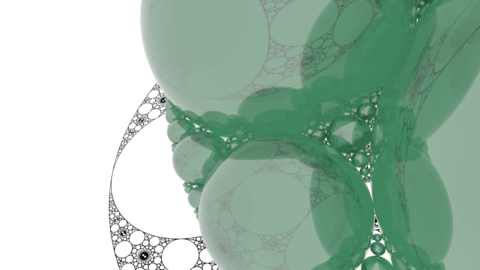
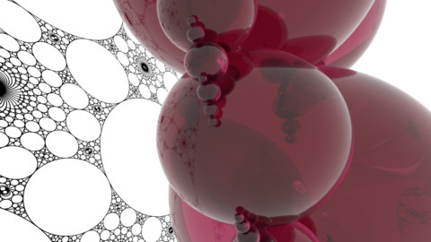
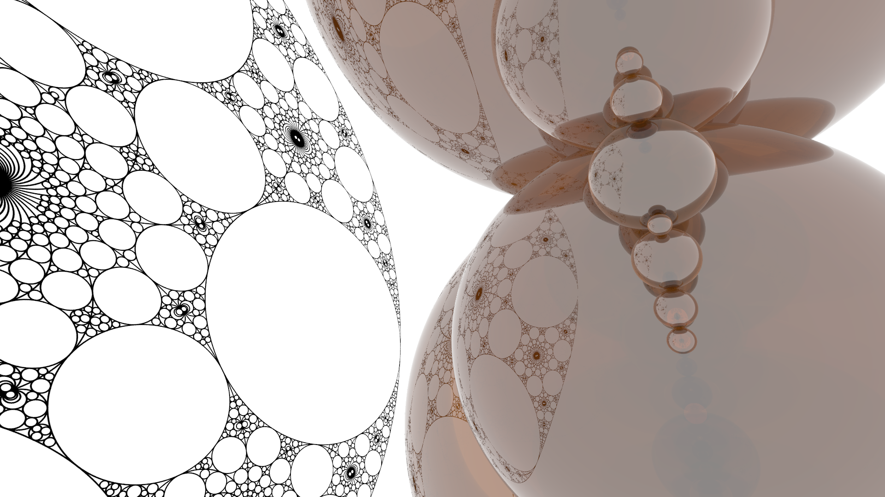
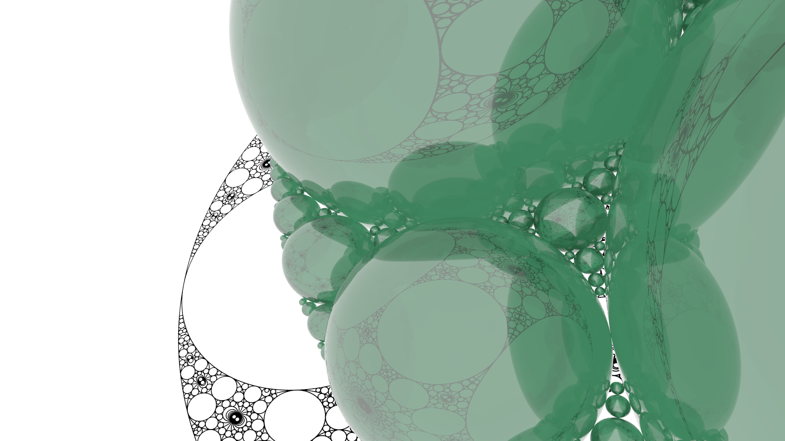
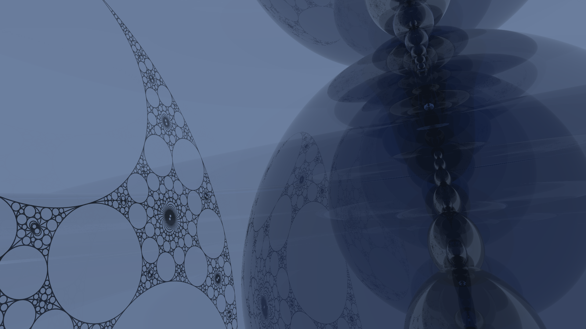
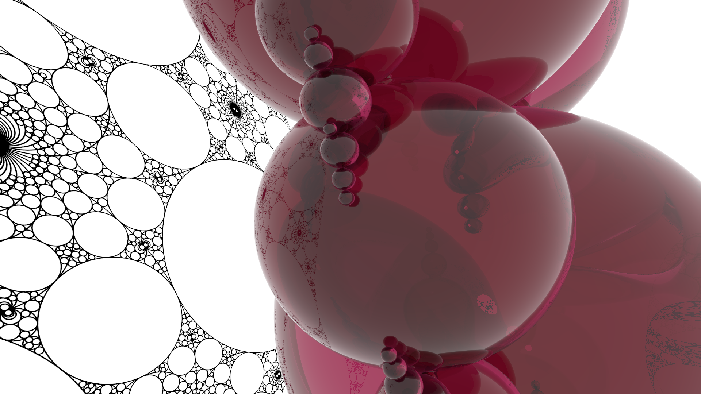

Here you have some orange glass spheres in the shape of a limit set floating above the limit set itself.

Some green glass spheres in the shape of a limit set floating above the limit set itself. The perspective is different from the orange ones though the limit set is the same.
Some blue spheres in the shape of a limit set floating above the limit set itself. The perspective is different from both the orange and the green ones though they're all the same limit set.

Some red spheres in the shape of a limit set floating above the limit set itself. The perspective is different from both the others though they're all the same limit set.
Limit Set Spheres - Orange
This picture was strongly influenced by the Bug on Notes of Thurston image (here) created by David Dumas and Jeffrey Brock. The image was created by using Curt McMullen's Lim software (here) to generate a limit set, by using Dr. Dumas's
lim2pov
script (here) to generate the associated POV-Ray file, and then tinkering with options in POV-Ray to get the colors/perspectives/etc. seen here.

Limit Set Spheres - Green
This picture was strongly influenced by the Bug on Notes of Thurston image (here) created by David Dumas and Jeffrey Brock. The image was created by using Curt McMullen's Lim software (here) to generate a limit set, by using Dr. Dumas's
lim2pov
script (here) to generate the associated POV-Ray file, and then tinkering with options in POV-Ray to get the colors/perspectives/etc. seen here.

Limit Set Spheres - Blue
This picture was strongly influenced by the Bug on Notes of Thurston image (here) created by David Dumas and Jeffrey Brock. The image was created by using Curt McMullen's Lim software (here) to generate a limit set, by using Dr. Dumas's
lim2pov
script (here) to generate the associated POV-Ray file, and then tinkering with options in POV-Ray to get the colors/perspectives/etc. seen here.

Limit Set Spheres - Red
This picture was strongly influenced by the Bug on Notes of Thurston image (here) created by David Dumas and Jeffrey Brock. The image was created by using Curt McMullen's Lim software (here) to generate a limit set, by using Dr. Dumas's
lim2pov
script (here) to generate the associated POV-Ray file, and then tinkering with options in POV-Ray to get the colors/perspectives/etc. seen here.

Navigate with arrow keys
The general template of this grid originated on
Codrops
(here). Its author is Mary Lou and any credit/rights thereto belong to her.